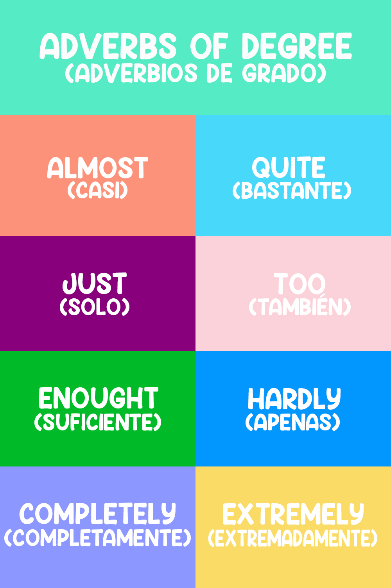

| Los adverbios de grado nos hablan de la intensidad o grado de una acción, un adjetivo u otro adverbio. |
| ORACIONES | ||
| The movie we watched was quite entertaining. (La película que vimos era bastante divertida.) |
||
| They are completely exhausted from the trip. (Están completamente exhaustos del viaje.) |
||
| I have three siblings and my best friend does too. (Yo tengo tres hermanos y mi mejor amiga también.) |
||
| Lena is an extremely good science student. (Lena es una estudiante de ciencias extremadamente buena.) |
||
|  |
|